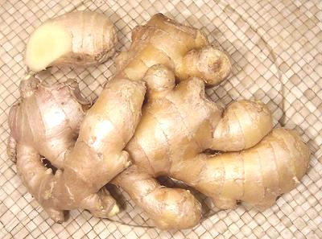
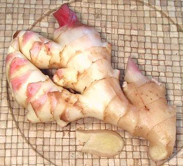

Ginger

[Khing (Thai); Saenggang (Korea); Inji (Tamil, Malaysian); Aadu (Gujarati),
Alay (Marathi); Adrak (Hindi, Urdu); Zanjabil (Arabic);
Zingiber officinale]
Originally from South or Southeast Asia, ginger is far and away the
most used of the Zingiberaceae family rhizomes. The top ten
producers ship more than a million and a half tons (US) annually, with
India, China and Indonesia the major producers. Nigeria is the only major
producer outside Asia. Available fresh, dried and ground, ginger is now
important in every major cuisine worldwide. The photo specimen was 7-1/2
inches long and weighed 12 ounces, a small part of a ginger "reef". Reefs
can easily exceed 30 pounds.
Ginger is also important in both formal and folk medicine, particularly
for nausea and stomach upset. It has been shown effective against motion
sickness, morning sickness and nausea from chemotherapy, but not for
postoperative nausea. It is also used as a flavoring to cover
medicinal tastes.
More on Gingers.
Young Ginger

[Stem ginger, Green ginger, Pink ginger, New ginger, Spring ginger,
Zingiber officinale]
This is regular ginger when new sections of rhizome have formed and
sprouted leaf stems. It is juicier and much milder than older ginger
and has a tender skin that is generally not peeled. It is seasonal so not
always available. Ginger in this state of growth is often pickled,
particularly in Southeastern India. It is often called for in Southeast
Asian recipes and is preferred for general cooking in Cambodia.
This ginger, lightly pickled and dyed a light pink, is the ginger
served with sushi and sashimi in Japanese restaurants.
Buying:
This ginger is now easy to find in Asian markets
that serve a significant Southeast Asian community, at least here in
Southern California, when it is in season. It is stored the same
as regular ginger but is much more perishable, so should be used soon
after purchase.
Countries that are significant Ginger users.
- China: Fresh ginger is often used in fish dishes to
reduce the "fishiness". It is also candied for use as a sweet, and a
beverage is made for the treatment of colds. Dried and ground ginger
are also used depending on the region.
- India: Fresh ginger is one of the most important
flavorings used in cooking curries and vegetables. It is particularly
liked with lentils and other pulses. In Southern India ginger is widely
used to make candy and young ginger is pickled. Dried and powdered
ginger is also used in masalas (spice mixes) but rarely in recipes.
Medicinally it is used to treat colds, generally as a tea.
- Africa (Sub-Saharan): As with many other foods and
spicings, fresh ginger follows Indian practice and is an essential
flavoring.
- Japan: Fresh ginger is often grated and used as a
flavorful garnish on tofu, noodles and other dishes. Fresh ginger is
pickled in two forms: Gari, a light pink form made from young ginger is
served in sushi bars; Beni shoga, a deep red form is used as a
condiment and toping on many dishes. Dried ginger is very rarely used.
- Korea: Finely chopped or grated fresh ginger is an
important flavoring ingredient in kimchi (Korean sauerkraut) and is
also widely used in general cooking.
- Europe The Romans imported fresh ginger by the shipload
as a favored flavoring ingredient. Since the fall of the Empire it has
been used mostly in powdered form for baking, and as a flavoring in
beverages.
- North America Until recently, usage was similar to
Europe, but today, with wholesale adoption of ethnic cuisines, fresh
ginger is common even in supermarkets. Here in Southern California, any
self respecting produce market has 20 to 50 pounds on display, and it
sells rapidly. Medicinally it is used to treat nausea.
- Southeast Asia: Ginger is one of the most important
ingredients in an endless number of dishes. Medicinally, it is used
sweetened with palm sap (palm sugar) as a preventive and treatment for
colds and flu.
- Middle East / North Africa Dried ginger powder is used
as a flavoring in tea.
Fresh Ginger
Buying & Storing:
Look for rhizomes that are smooth
and very firm rather than wrinkled, and which are free of bruises or dark
spots. Best to buy one large piece rather than several small ones to
minimize the cut or broken area.
Most instructions have you wrap ginger in dry toweling and store it in
the refrigerator in a paper bag - but I use it much too frequently to be
all the time unwrapping and wrapping. I have found it keeps very well in
a short plastic bag set in a tray in the refrigerator door with the
top left wide open. In a closed bag it will soon go to mold.
Cooking:
Ginger is used sliced (in soups and stews - to
be removed (or not) before serving), chopped fine (in stir fries, curries
and the like) and grated. Ginger Juice is called for in some
recipes and is made by grating ginger and wringing the juice out by
wrapping it tightly in a cloth.
Most recipes call for peeling ginger but this is not necessary. My
practice, and the practice of a number of chefs, is to shave off the
gnarly parts and leave most of the skin on. Some Southeast Asian recipes
actually call for the skin to be left on because much of the flavor is
close under the skin.
When preparing for most uses, cut slices crosswise as thin as you can
to break the fibers. Then lay out the slices in an overlapping stack and cut
into narrow slivers. Sometimes these are used as is, but otherwise bunch them
up and cut into tiny pieces, then chop further or mash in a mortar as
appropriate for the recipe. Never slice ginger lengthwise.
Do not attempt to used dried ginger in recipes calling for fresh - it
just isn't the same thing at all.
Dried & Powdered Ginger
Powdered ginger is familiar in North America and Europe as an ingredient
in many baked goods, ginger bread for example. It is widely
used in Middle Eastern and North African cuisines and in India for
some specialty dishes and as an ingredient in masalas (spice powders).
Fresh ginger can not be used as a substitute for dried, nor vice versa
- they just aren't the same thing at all.
gg_gingerz 090206 r 140124 - www.clovegarden.com
©Andrew Grygus - agryg@aaxnet.com - photos on
this page © cg1 - Linking to and
non-commercial use of this page permitted